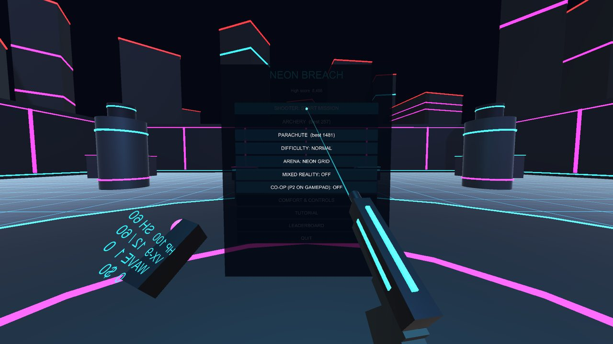
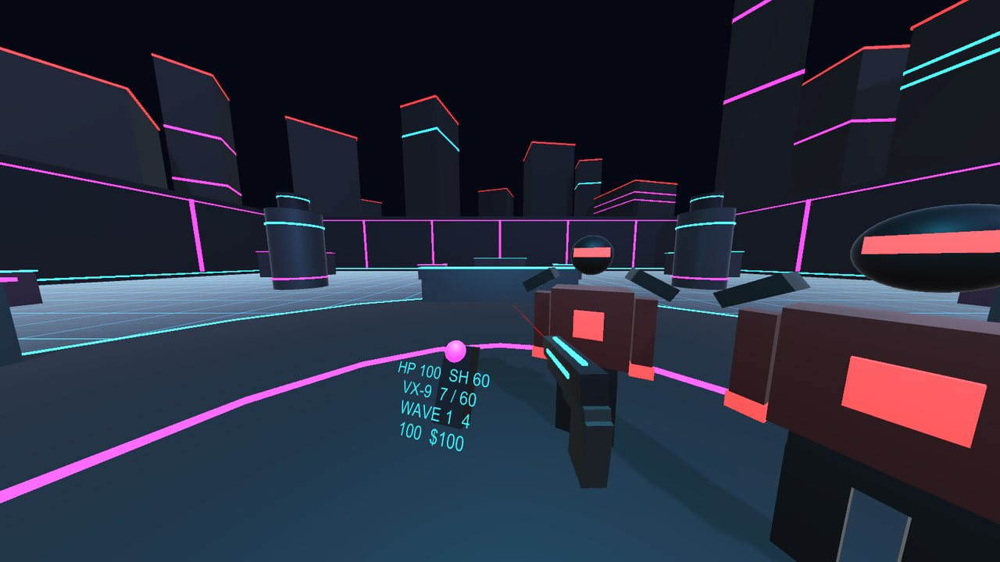

The project is a standard Unity package-manager project. Its Packages/manifest.json declares the XR stack described in Chapter 3 – XR Plug-in Management 4.5.4, OpenXR 1.17.1, XR Hands 1.8.0, AR Foundation 6.5.0 and Unity OpenXR: Meta 2.5.0 – together with the Input System 1.19.0 and AI Navigation 2.0.14. com.unity.pipeline is a development dependency: it lets the Unity command-line interface drive the running Editor, which was used to capture the evidence in this report. The startup intro additionally uses uGUI 2.5 (a Screen Space – Overlay Canvas), which the XR packages already bring in.
Unity starts XR through XR Plug-in Management. For each build target it stores a list of loaders and a flag, Initialize XR on Startup. At start-up the first loader whose runtime is available initialises the XR subsystems: display, input, hands, camera and session.
Assets/XR/XRGeneralSettingsPerBuildTarget.asset contained no build targets, and every feature in OpenXR Package Settings.asset had m_enabled: 0. The VR code was complete, but VR could not start until a developer ran a manual set-up step that is easy to forget before a demonstration.ProjectMenu.cs) was then run: it assigned the OpenXR loader and enabled the five controller profiles plus hand tracking (9 changes). Unity's OpenXR project validation reports 0 issues for Standalone, and XR Plug-in Management validation reports 0 issues in 12 checks after the Run In Background fix ([[f-xr-validation]]).| Feature | Purpose in NEON BREACH |
|---|---|
| Oculus Touch Controller Profile | Bindings for Quest 2/3 and Rift Touch controllers (triggers, grips, A/B/X/Y, sticks, menu) |
| Meta Quest Touch Plus / Touch Pro Controller Profiles | Bindings for the Quest 3 and Quest Pro controllers |
| Valve Index Controller Profile | Bindings for Index ("Knuckles") controllers through SteamVR |
| HTC Vive Controller Profile | Bindings for Vive wands (trackpad mapped to primary2DAxis) |
| Hand Tracking Subsystem (XR Hands) | Enables XR_EXT_hand_tracking; provides the 26-joint skeletons read by HandTracking.cs |
| Meta Hand Tracking Aim | Meta's aim pose and pinch data for hands on Quest |
For the Android (Quest) target the same tool also enables Meta Quest Support, Meta Quest: Session and Meta Quest: Camera (Passthrough). These Android features only appear once the Android Build Support module is installed, which is not the case on the development PC ([[s-constraints]]). The Android loader is already assigned, so installing the module and re-running the tool completes the Quest set-up.

The same scene serves desktop and VR. VRRig decides at runtime whether a headset is present by asking the XR input API for a valid device at the Head node (InputDevices.GetDeviceAtXRNode(XRNode.Head).isValid).
When Active is false, the rig hides its hands and stays idle, and the player uses the desktop camera and HUD. When it becomes true, the camera follows the tracked head, both hands appear, the HUD is replaced by world-space menus and the wrist display, and VR-incompatible effects (camera shake, recoil kick, head bob, FOV changes) are disabled; the desktop mirror then shows the VR-only Mixed Reality Passthrough option and the message "VR headset detected". On the desktop the player camera bobs, leans, recoils and changes its field of view; in VR it takes its pose from the tracked CenterEye, renders single-pass instanced stereo and never moves on its own. The parachute's third-person chase camera becomes first person in VR, and the archery zoom is disabled because a headset's field of view is fixed by its lenses.
The rig is generated in code when the player spawns (VRRig.Start and MakeHand). Both hands are children of the CameraPivot, which represents the origin of the tracking space, so their local positions can be set directly from tracked poses. Each hand has a small controller shell and a coloured glow (cyan right, magenta left). The left hand carries the WristDisplay text; the right hand carries the laser sight and, at runtime, the weapon holder. The rig also adds the HandTracking and VRMenu components and creates the ComfortVignette quad in front of the camera.
VRRig.Read ([[l-read]]) is called by PlayerController every frame and translates controller state into the shared PlayerInputState. Devices are looked up by role (XRNode.LeftHand, XRNode.RightHand) and read through generic CommonUsages, so the same code works with every enabled interaction profile. Edge detection (trigR && !pTrigR) converts held buttons into single-frame "pressed" events. A dead-zone of 0.18 on the thumbsticks filters drift.
| Controller | CommonUsage | Game action (shooter) | Archery / parachute |
|---|---|---|---|
| Right | triggerButton | Fire (held) / fire pressed; VR menu click | Draw and release / flare |
| Right | gripButton | Reload | Ripcord |
| Right | primaryButton (A) | Jump; menu click | Jump / open canopy |
| Right | secondaryButton (B) | Next weapon | – |
| Right | primary2DAxis (stick) | Snap or smooth turn; pull back to crouch | Turn |
| Right | primary2DAxisClick | Dash | – |
| Left | primary2DAxis (stick) | Locomotion (disabled in MR) | Track / steer |
| Left | triggerButton | Throw grenade; also zoomHeld | Zoom / slow down |
| Left | gripButton | Melee | – |
| Left | primaryButton (X) / secondaryButton (Y) | Flashlight / medkit | – |
| Left | primary2DAxisClick, menuButton | Sprint; pause / VR menu | Speed up; pause |
When no controller is held, hands can play the game. HandTracking ([[l-hands]]) locates a running XRHandSubsystem once per second until one appears, then reads eight joints per hand every frame: the thumb, index, middle, ring and little fingertips, the palm, the wrist and the middle proximal knuckle. Two gestures are recognised from joint distances:
The right hand's aim pose is computed from the wrist-to-knuckle vector, so the weapon follows the back of the hand. Right pinch fires and also clicks VR menus, right palm reloads, left pinch throws a grenade and left palm uses a medkit. VRRig.Read applies a hand's gestures only when no controller is held in that hand.
The audit found that several code paths still assigned Camera.fieldOfView while a headset was rendering, which made Unity log a warning on every mode switch in VR. All such writes now go through a guard ([[l-fov]]). The fix was verified both ways: in VR, switching between Archery, Parachute and Shooter produced no warnings; on the desktop, sprinting still widens the FOV from 87.4° to 94.4°.
MR mode is enabled from the VR menu (MIXED REALITY: ON) and applied by ArenaManager.Prepare when a mission starts. MixedReality.Enable performs five steps:
(0,0,0,0) so that the compositor shows the passthrough feed behind the rendered content.ARCameraManager to the camera and creates an ARSession; on Quest, Unity's Meta OpenXR package uses them to enable passthrough.VRRig.Read checks MixedReality.Active), so the virtual and real rooms stay aligned.Haptics sends impulses through InputDevice.SendHapticImpulse after checking HapticCapabilities.supportsImpulse, which works with any OpenXR controller; gamepads get matching low/high-frequency rumble. Amplitude and duration are derived from game data. A shot pulses the gun hand with a strength that grows with the weapon's recoil; damage pulses both hands in proportion to the damage; explosions rumble according to their distance.
Screen-space overlays do not work in a headset, so the VR interface consists of world-space objects. VRMenuDriver decides which page to show for the current game state: main, pause, shop, game over, comfort and controls, switch mode, or leaderboard. VRMenu places the panel 1.6 m in front of the head, 0.1 m below eye height, and selects rows with a ray from the right hand. A LineRenderer draws the ray and a cursor marks the hit point; the hovered row is highlighted; the right trigger, the A button or a right-hand pinch clicks; and every click sends a short haptic pulse. During play, a TextMesh on the left wrist shows health, shield, weapon and ammunition, wave and score. Each mini-game can override this text (the archery round and wind, the parachute altitude and distance to the pad).
DesktopInput compiles against both of Unity's input back-ends and addresses keys with KeyCode, so rebinding is stored independently of the back-end. With the Input System package (the project's setting), each KeyCode is translated to an Input System Key. The audit found that the translation assumed contiguous digit keys. In the Input System enum, Digit0 comes after Digit9 (Digit1 = 41 … Digit9 = 49, Digit0 = 50), so keys 1/2/3 were read as Left Shift, Right Shift and Left Alt. The corrected mapping is shown in [[l-tokey]].
No physical headset was available during the ESE preparation. Rather than leave the VR code compile-checked only, the team verified it with the OpenXR Mock Runtime, a simulated OpenXR runtime that ships with Unity's OpenXR plug-in [13]. It runs the real OpenXR loader, session and action system without hardware. Together with the conformance-automation extension (XR_EXT_conformance_automation), test code can set controller poses and button states inside the runtime. Those values then reach the game through exactly the same path a real headset uses: the OpenXR action system, Unity's XR input subsystem, InputDevices, and finally VRRig.
Focused state and that Unity reported a head device and left and right controllers.MockRuntime.SetSpace(View, …) and the controller grip and aim poses with ConformanceAutomationSetPose; pressed buttons with ConformanceAutomationSetBool, SetFloat and SetVec2.MockRuntime.onScriptEvent to count the haptic impulses that the game sent to the runtime.These steps were driven from the command line through the Unity CLI's script eval, not added to the game code ([[t-mock-calls]]).
| Purpose | API (OpenXR Plugin test features) |
|---|---|
| Simulated device | Mock Runtime, Conformance Automation and Khronos Simple Controller features enabled for Standalone (disabled again afterwards) |
| Head and controller poses | MockRuntime.SetSpace(XrReferenceSpaceType.View, ...); ConformanceAutomationFeature.ConformanceAutomationSetPose(...) |
| Buttons, triggers, thumbsticks | ConformanceAutomationSetBool, SetFloat, SetVec2 |
| Haptics and game state | Handler on MockRuntime.onScriptEvent; VRRig.HeadsetPresent, GameManager.VrActive, InputDevices poses |
| # | Check | Observed result | Status |
|---|---|---|---|
| 1 | OpenXR session and devices | Loader OpenXRLoader; session state Focused; devices "Head Tracking – OpenXR" [HeadMounted, TrackedDevice] and left/right controllers (the Mock Runtime emulates the first bound profile, HTC Vive) | Pass |
| 2 | XR subsystems | Display subsystem running with 1 render pass (single-pass instanced), eye texture 1512×1680; input subsystem running, tracking origin Floor; device "OpenXR Display" | Pass |
| 3 | Headset detection | VRRig.HeadsetPresent = true, GameManager.VrActive = true; desktop menu shows the MR toggle | Pass |
| 4 | Pose registration | Right grip set to (0.20, −0.35, 0.35) m in tracking space → read back exactly by InputDevices → RightHand world position (0.20, 1.30, 0.35) m (Chapter 6) | Pass |
| 5 | VR menu pointer | Hand ray hit row 0 "SHOOTER: START MISSION" (hover = 0); the trigger click started the mission (state Playing) | Pass |
| 6 | Firing with the tracked weapon | 4 trigger presses aimed at the nearest enemy: 5 shots fired, 3 hits, 1 kill, score 100; the wrist display updated (ammo 7 → 6) | Pass |
| 7 | Haptics | The runtime received 2 impulses for the menu click, 6 after the shots, and 78 after the archery draw and release | Pass |
| 8 | Locomotion + comfort vignette | Left stick forward: speed 4.13 m/s, moved 7.17 m, vignette visible with amount 0.64; after release, amount returned to 0 | Pass |
| 9 | Snap turn | Right stick fully deflected: body yaw changed by 45° (0° → 315°) in one step | Pass |
| 10 | Mixed-reality mode | Toggled with the VR pointer; MixedReality.Active = true; clear flags SolidColor with alpha 0; fog off; room 3.50 × 3.50 m (fallback, as the Mock Runtime provides no boundary); 4 walls; 12 spawn points; NavMesh rebuilt; enemy spawned inside the room | Pass (logic) |
| 11 | VR archery | The bow follows the tracked right hand; the trigger drew it to 91 %; release hit the 20 m target for +10; the wrist display showed the round, arrows and wind | Pass |
| 12 | VR parachute | First-person plane-door view, world-space "SKYDIVE" banner, wrist altimeter (ALT 2,999 m, PAD 1,192 m, RINGS 0/12) | Pass |
| 13 | Mode switching in VR | Shooter → Archery → Parachute → Shooter with VR active: 0 warnings and 0 errors in the console (after the FOV fix) | Pass |
| 14 | Hand tracking | No XRHandSubsystem is created by the Mock Runtime (it has no hand-tracking extension); gesture code is not exercised | Needs hardware |
| 15 | Passthrough camera feed | ARSession.state = None: the Mock Runtime has no camera; the passthrough image needs a Quest | Needs hardware |

